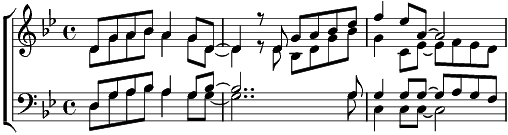

1. Et si tu n'existais pas - j'existerais j'existerais
Pour traîner dans un monde sans toi
Sans espoir et sans regrets
Si tu n'existais pas - d'inventer l'amour l'amour
Comme un peintre qui voit sous ses doigts
Naître les couleurs du jour du jour
N'en revient pas n'en revient pas
2. Et si tu n'existais pas - j'existerais j'existerais
Des passantes endormies dans mes bras
Que je n'aimerais jamais jamais
Si tu n'existais pas - qu'un point de plus de plus
Dans ce monde qui vient et qui va
Je me sentirais perdu perdu
Besoin de toi besoin de toi
3. Et si tu n'existais pas - j'existerais j'existerais
Je pourrais faire semblant d'être moi
Mais je ne serais pas vrai pas vrai
Si tu n'existais pas - l'aurais trouvé trouvé
Le secret de la vie le pourquoi
Simplement pour te créer créer
Te regarder te regarder